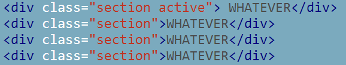

HOME
Create Beautiful Fullscreen Scrolling Websites

Create Sliders
Not only vertical scrolling but also horizontal scrolling. With fullPage.js you will be able to add horizontal sliders in the most simple way ever.


Simple
Easy to use. Configurable and customizable.

Cool
It just looks cool. Impress everybody with a simple and modern web design!

Compatible
Working in modern and old browsers too! IE 8 users don't have the fault of using that horrible browser! Lets give them a chance to see your site in a proper way!
Example
HTML markup example to define 4 sections.
Working On Tablets
Designed to fit to different screen sizes as well as tablet and mobile devices.
Working On Tablets
Designed to fit to different screen sizes as well as tablet and mobile devices.
Working On Tablets
Designed to fit to different screen sizes as well as tablet and mobile devices.